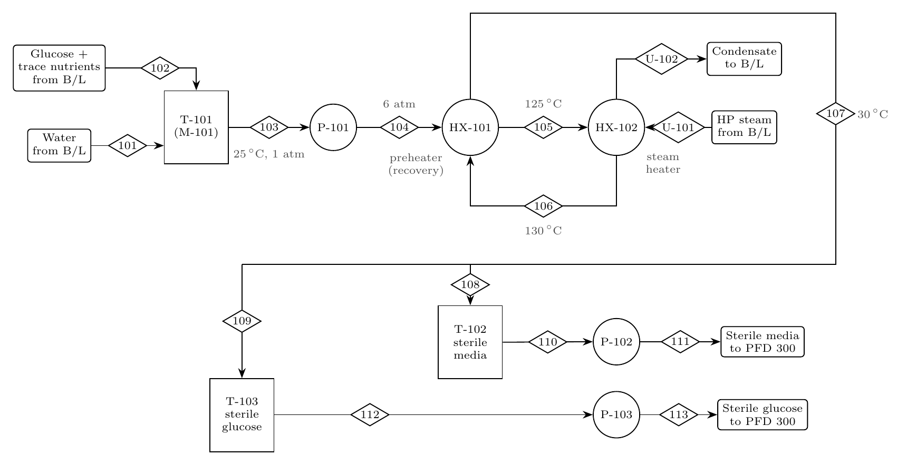

Production-scale design of a plant making Montbretin A (MbA), a potential type 2 diabetes therapeutic, from bioengineered Saccharomyces cerevisiae yeast.
- Program
- UBC Chemical and Biological Engineering capstone
- Team
- 7 students
- Role
- Team coordinator · Heat integration · Economics · Biomass separation
- Tools
- Excel
A plant returning a 17% real after-tax IRR on equity against $75.7M of fixed capital, with a heat-exchanger network handling 1.74 MW of duty, about 95% of it recovered internally.
- Team coordinator. The role rotated weekly; after my week the team asked me to keep it for the whole project. I sent agendas ahead, wrote minutes detailed enough that anyone who missed a meeting could catch up, captured professor and sponsor feedback at reviews, and called the in-person work sessions that carried us through both semester deadlines.
- Heat-exchanger network (PFD 100): heat duties, log-mean temperature differences and exchanger areas for media and glucose sterilization, plus preliminary pump sizing.
- Economics: built the economic model: capital estimate, operating costs, financed cash flow and IRR.
- Biomass separation (PFD 400): PFD and material balances to complete solid-liquid separation of each 16 m³ fermentation batch within a 12-hour turnaround.
MbA builds up inside the yeast cells, so the biomass is the product stream. The plant runs in six areas:
- Media sterilization (100): one heat-sterilization train serves both the start-up media (about 14 m³ in 2 hours) and the fed-batch glucose feed (about 21 t in 3 hours), each into its own sterile storage tank.
- Air filtration (200): sterile air for the fermenters.
- Fermentation (300): two 20 m³ fed-batch fermenters at 16 m³ working volume, on a 48-hour cycle (36 h fermentation, 2 h emptying, 10 h cleaning).
- Lysis and separation (400): centrifuge cell washing, high-pressure homogenization to release MbA, then filtration.
- Purification (500) and drying (600).
Output: about 11 kg of MbA per batch, 333 batches and roughly 3,700 kg a year, or about 74 million 50 mg doses.

| Media campaign | Glucose campaign | |
|---|---|---|
| HX-101 preheater (heat recovery) | 835.6 kW · 196.2 m² | 824.8 kW · 193.7 m² |
| HX-102 steam heater | 41.8 kW · 0.16 m² | 41.2 kW · 0.16 m² |
- Heat recovery: the hot sterilized stream preheats the incoming feed, so steam supplies only the last 5 °C (83 kW of the 1.74 MW) and cooling back to 30 °C needs no cooling water.
- Tight approach: both ends of the preheater sit 5 °C apart, which makes it large (about 196 m²) and requires counter-current flow: the cold side leaves at 125 °C while the hot side leaves at 30 °C.
- Staying liquid: P-101 raises the feed to 6 atm, well above the ~2.7 bar at which water boils at 130 °C.
- Shell-and-tube exchangers in 316L stainless steel. The two campaigns never run at once, so the network carries about 0.88 MW at any time.
| Delivered equipment cost | $9.9M |
| Fixed capital investment | $75.7M |
| Total capital investment (incl. working capital) | $86.8M |
| Revenue ($0.85 per 50 mg dose) | $63.1M / yr |
| Operating cost | $48.1M / yr |
| IRR, real after-tax, on equity | 17.0% |
| Net present worth (12.9% after-tax MARR) | $27.9M |
| Benefit–cost ratio | 1.84 |
Capital was factored from equipment cost with Peters, Timmerhaus and West's solid-fluid plant factors, after adding 50% to equipment for clean-in-place systems; land and the sterile-water system were added separately. The model assumes 30% equity and 70% debt at 12% over 20 years, 4% inflation and a 2-year build. Without the debt, the project IRR is 10.0% real (14.4% nominal).
- Leak direction in HX-101: the sterile side runs about 2 atm below the unsterile side, so a tube leak would contaminate the sterile stream. A back-pressure valve on the sterile side would reverse that.
- Steam conditions: steam at 4 atm condenses at about 144 °C, not the 150 °C we designed on. Either raise the steam pressure to about 4.8 bar or size HX-102 on 144 °C, which needs roughly a third more area.
- Safety layer: add an independent high-high level trip on each fermenter, with its own sensor and shutoff, separate from the feed control loops.
Course design project. Figures are from the team's design report, stream tables and economic model.